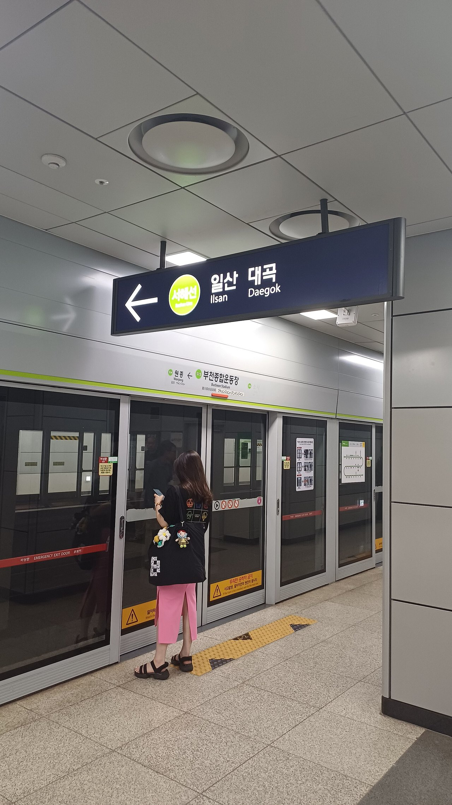
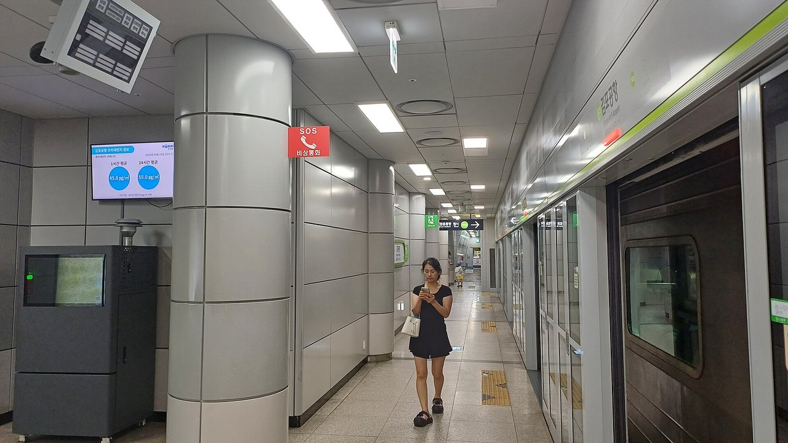
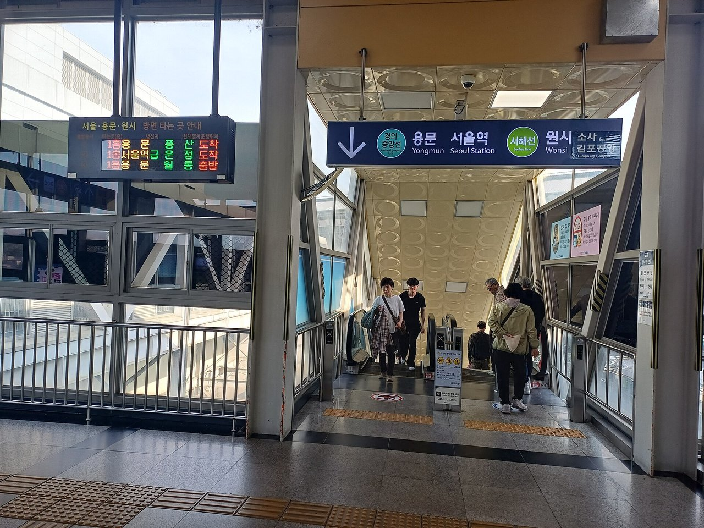
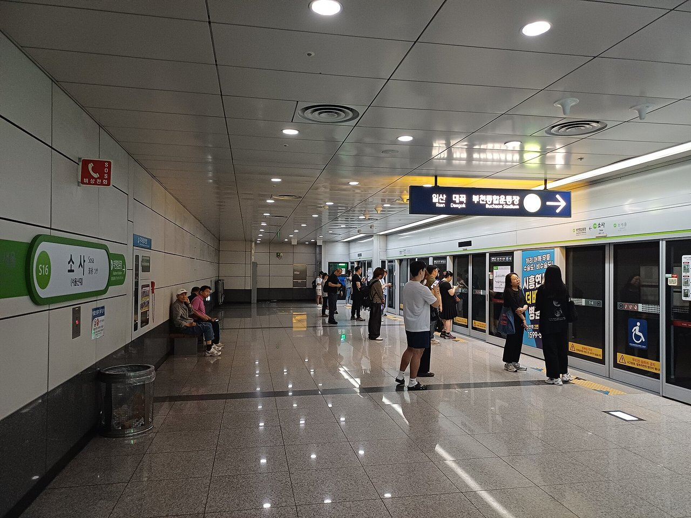
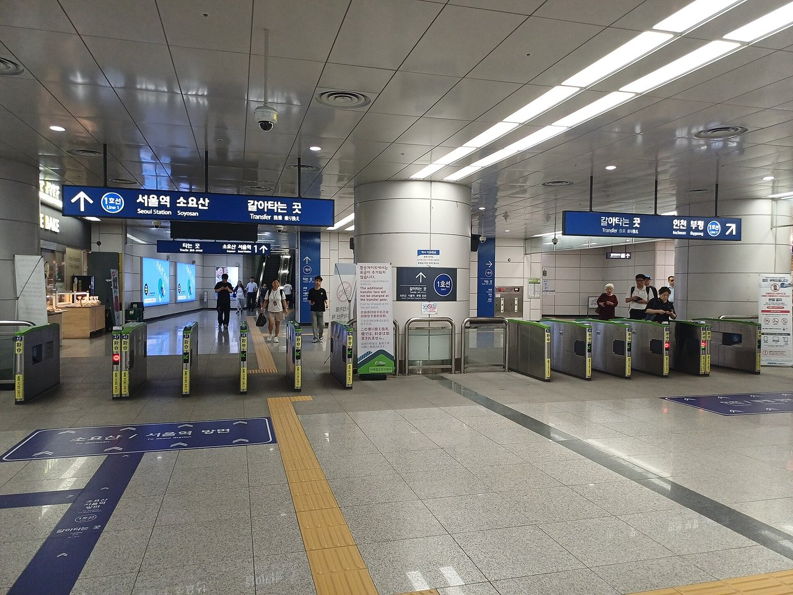
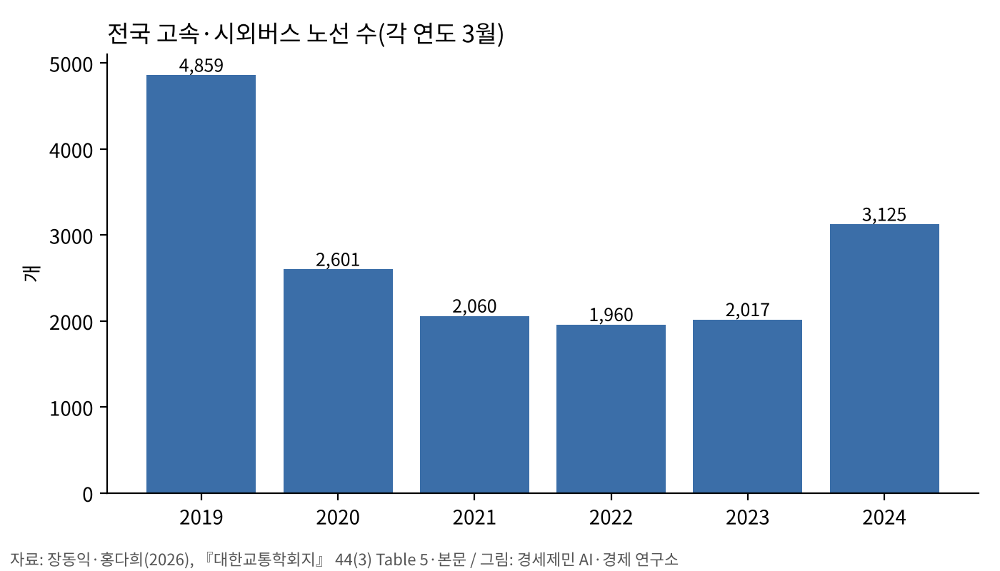
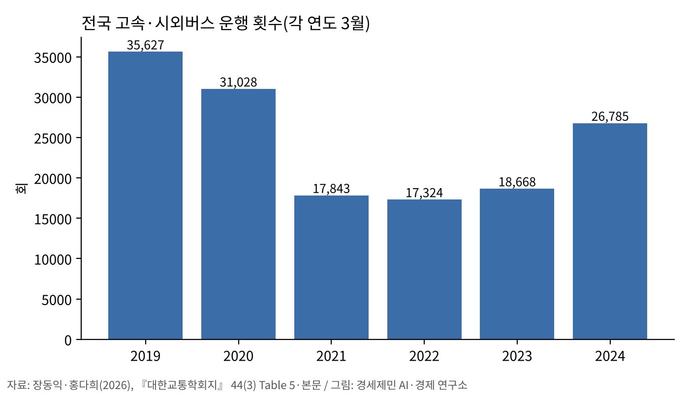
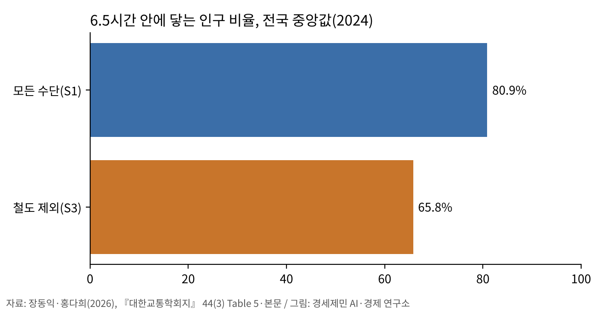
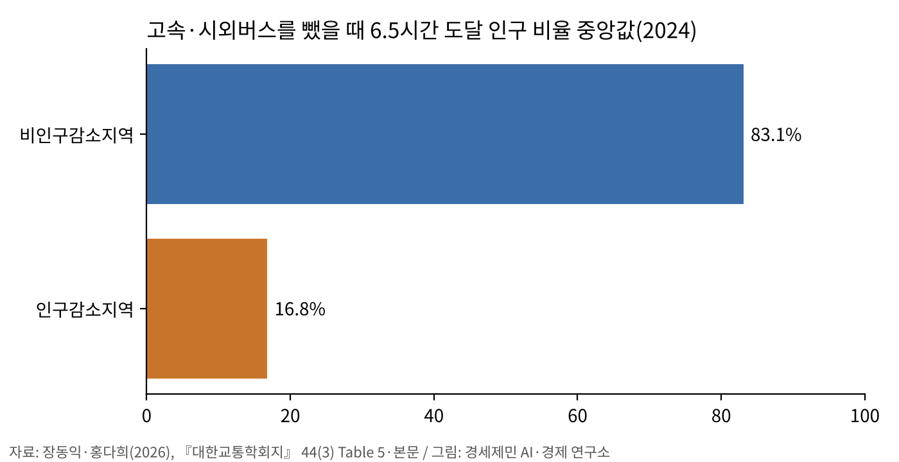
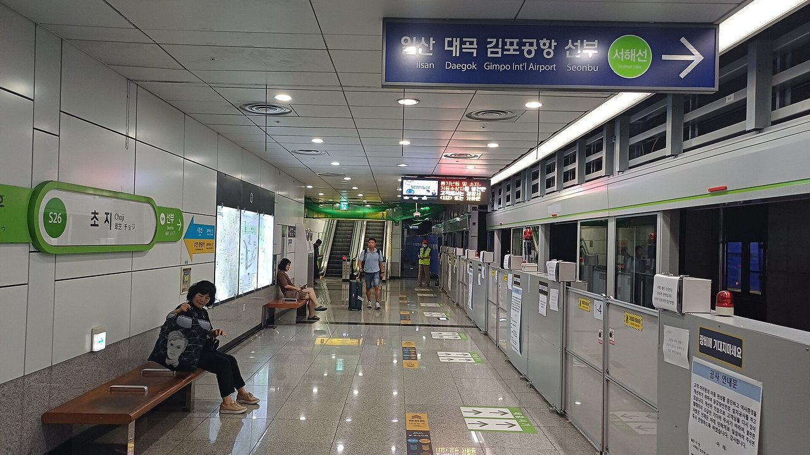

[복합물류 브리핑] 서해선 연장 뒤 철도 접근성, 부천·시흥·인천 서부로 번졌다
GTFS 운행표로 본 대곡~소사 개통 효과, 새 구간 30분 안 지역이 가장 크게 올랐다
지역 간 고속·시외버스는 2019년보다 노선 35.7% 줄어
서해선 대곡~소사 구간은 2023년 7월 1일 전 구간이 개통했다. 이 구간이 수도권 서부의 철도 접근성을 개통역 밖까지 끌어올렸다는 실증 연구가 나왔다.
접근성이 가장 크게 오른 역은 부천과 시흥의 소새울역, 소사역, 시흥대야역이었다.
같은 시기 국내 지역 간 고속·시외버스는 노선과 운행 횟수가 팬데믹 이전 수준을 회복하지 못했다. 한국교통연구원 연구진이 같은 학술지 같은 호에 밝힌 분석이다.

서해선 대곡~소사, 18.36km가 서쪽 고리를 이었다
장승화·김태우·김새힘·고준호(한양대 도시대학원)는 『대한교통학회지』 44권 3호(2026년 6월)에 이 논문을 실었다.
논문을 보면 대곡~소사 구간은 고양시 대곡역과 부천시 소사역을 잇는 18.36km 복선전철이다. 임대형 민자사업(BTL)으로 추진했다. 연구진은 이 구간이 수도권 순환철도망의 서쪽 끊긴 고리를 메웠다고 설명했다.
국토교통부는 2023년 6월 30일 보도참고자료에서 이 사업에 총사업비 1조5557억원(민자 1조3376억원)이 들었다고 밝혔다. 고양에서 부천까지 이동시간은 67분에서 19분으로 48분 줄어든다고 설명했다.
김포공항역은 기존 4개 노선에 서해선이 더해져 5개 노선이 만나는 환승역이 됐다. 부천종합운동장역(7호선), 소사역(1호선), 대곡역(3호선·경의중앙선)도 동서축과 남북축이 만나는 자리가 됐다.


운행표로 잰 60분 접근성
연구진은 국제 대중교통 운행표 표준(GTFS)의 실제 운행 정보로 개통 전후 철도망을 만들었다. 분석 범위는 서울·인천·부천·김포·시흥 등 14개 지방자치단체, 역 500개다.
역마다 오전 첨두시 5분 간격 24개 시점에서 60분 안에 닿는 범위를 구했다. 24개 시점 가운데 절반 넘게 닿는 곳만 접근 가능 지역으로 셌다. 여기에 2023년 11월 주민등록인구를 집계구 단위로 맞춰 접근 가능 인구를 냈다.
이 방식은 배차 간격을 반영한다. 노선이 생겨도 열차가 드물면 접근성은 덜 오른다.
뤄(Luo) 등(2023)은 중국 고속철도 접근성에 운행 빈도를 넣었다. 그 결과 최고 수준 접근성이 소수 도시에 몰리는 강한 양극화가 나타났다고 밝혔다.
새 구간 30분 안 지역이 가장 크게 올랐다
분석 결과 접근성 변화는 새 구간과 서해선을 따라 크게 나타났다. 상위 3개 역은 소새울역, 소사역, 시흥대야역이었다. 연구진은 이 역들이 기존 서해선의 끝점이어서 연장 효과가 컸다고 분석했다.


향상은 연계 노선을 따라 번졌다. 1호선, 7호선, 공항철도가 접근성 변화에 큰 영향을 줬다. 연구진은 부천, 인천, 강서, 고양 일대의 향상이 크게 나타났다고 밝혔다.
공간회귀모형에서 영향력이 가장 큰 변수는 「새 구간까지 30분 안에 닿는 지역」이었다. 이 변수는 모든 모형에서 유의했다. 역의 연결·중개 기능을 뜻하는 매개중심성 변화량도 유의했다.
연구진은 이 효과가 이웃 지역으로 번지는 공간 파급을 보였다고 밝혔다.
오전 첨두 버스 운행 빈도도 접근성을 유의하게 높였다. 연구진은 철도망 혜택이 실제 이동성으로 이어지려면 지선 버스 공급이 받쳐야 한다고 분석했다.
지역 간 버스는 줄었다
장동익(한국교통연구원)·홍다희(서울시립대)는 같은 호에 2019~2024년 지역 간 대중교통 이동성 변화를 분석했다. 국내 고속·시외버스 노선은 2019년 4859개에서 2024년 3125개로 35.7% 줄었다.


같은 기간 운행 횟수는 3만5627회에서 2만6785회로 24.8% 줄었다. 정류장은 2030개에서 1663개로 18.1% 줄었다. 연구진은 철도를 뺀 가상 상황에서 도달 가능 인구 비율이 해마다 평균 0.889%포인트씩 줄었다고 밝혔다.
2024년 모든 수단을 쓸 때 6.5시간 안에 닿는 인구 비율의 나라 전체 중앙값은 80.9%였다. 철도를 빼면 65.8%로 낮아졌다.
고속·시외버스를 빼면 인구감소지역 중앙값이 16.8%로 떨어졌다. 비인구감소지역은 83.1%였다. 연구진은 철도역 접근이 어려운 인구감소지역에서 고속·시외버스가 사실상 핵심 연결 수단이라고 분석했다.



김(Kim)·술타나(Sultana)는 2015년 국제학술지 『교통지리학회지』에 한국 고속철도 연구를 실었다. 연장 단계마다 접근성 효과가 달랐다고 분석했다. 2010·2011년 연장 때는 수도권에 가까운 간선 축 도시에 향상이 몰려 공간 형평성이 나빠졌다고 밝혔다.
생활권에 남는 물음
서해선 연구진은 개통 직후 잠재 접근성을 비교했다고 밝혔다. 실제 환승 저항, 통행 비용, 장기 토지이용 변화는 이 연구가 다루지 않았다.
연구진은 교통카드 기점·종점(OD) 자료로 실제 통행 증가를 확인하는 후속 연구를 제안했다.
참고문헌
- 장승화·김태우·김새힘·고준호(2026). 「서해선(대곡~소사) 개통 전후 접근성 변화량의 결정요인 분석: 네트워크 중심성 및 공간회귀 활용」. 『대한교통학회지』 44(3), 457–481. https://doi.org/10.7470/jkst.2026.44.3.457
- 장동익·홍다희(2026). 「GTFS 기반 지역간 대중교통 이동성 기반 접근성의 변화와 공간적 불균등성: 지역간 수단 가상제거 분석(2019–2024)」. 『대한교통학회지』 44(3), 482–496
- Kim, H., Sultana, S.(2015). "The impacts of high-speed rail extensions on accessibility and spatial equity changes in South Korea from 2004 to 2018". Journal of Transport Geography 45, 48–61
- Luo, H., Zhao, S., Cui, M., Zhong, S., Ma, J.(2023). "The evolution of spatial equity of high-speed rail accessibility in China: An operation frequency based approach". International Journal of Sustainable Transportation 17(12), 1265–1277
- 국토교통부(2023). 「대곡～소사 복선전철 7월 1일 개통」 보도참고자료, 2023년 6월 30일, 철도국 철도투자개발과. https://www.molit.go.kr
[사진·도표 출처]
- [사진 1] Striker9498, 「20260822 서해선 부천종합운동장역 승강장.jpg」, 위키미디어 공용, CC0, https://commons.wikimedia.org/wiki/File:20260822_서해선_부천종합운동장역_승강장.jpg
- [사진 2] Striker9498, 「20260815 서해선 김포공항역 승강장.jpg」, 위키미디어 공용, CC0, https://commons.wikimedia.org/wiki/File:20260815_서해선_김포공항역_승강장.jpg
- [사진 3] Striker9498, 「20260429 대곡역 서해선 경의중앙선 환승통로.jpg」, 위키미디어 공용, CC0, https://commons.wikimedia.org/wiki/File:20260429_대곡역_서해선_경의중앙선_환승통로.jpg
- [사진 4] Striker9498, 「20260703 서해선 소사역 승강장.jpg」, 위키미디어 공용, CC0, https://commons.wikimedia.org/wiki/File:20260703_서해선_소사역_승강장.jpg
- [사진 5] Striker9498, 「20260703 소사역 개찰구.jpg」, 위키미디어 공용, CC0, https://commons.wikimedia.org/wiki/File:20260703_소사역_개찰구.jpg
- [사진 6] Striker9498, 「20260727 서해선 초지역 승강장.jpg」, 위키미디어 공용, CC0, https://commons.wikimedia.org/wiki/File:20260727_서해선_초지역_승강장.jpg
- [도표 1~4] 경세제민 AI·경제 연구소 작성(자료 장동익·홍다희 2026, 『대한교통학회지』 44(3))
© 경세제민 AI·경제 연구소. 인용할 때는 출처를 밝혀 주십시오.